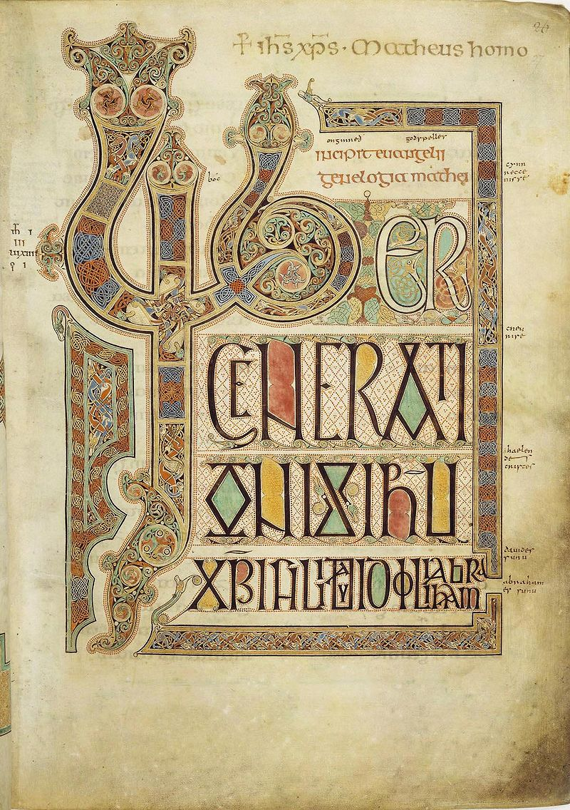
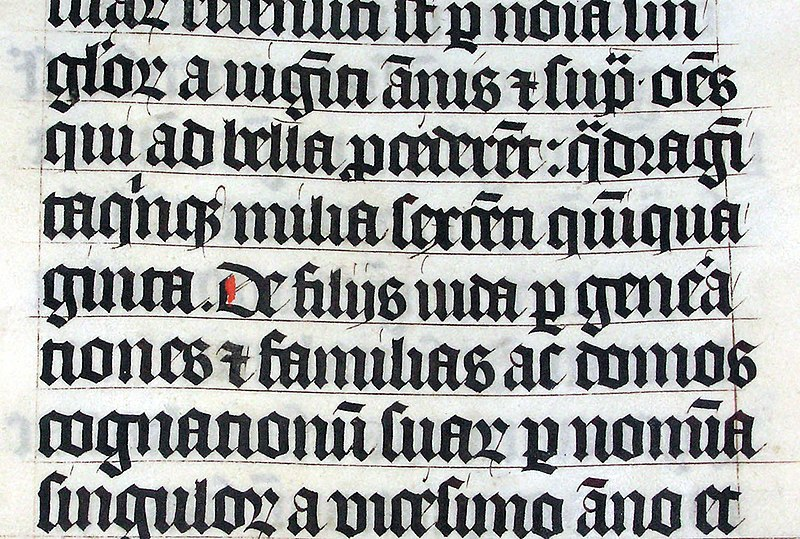
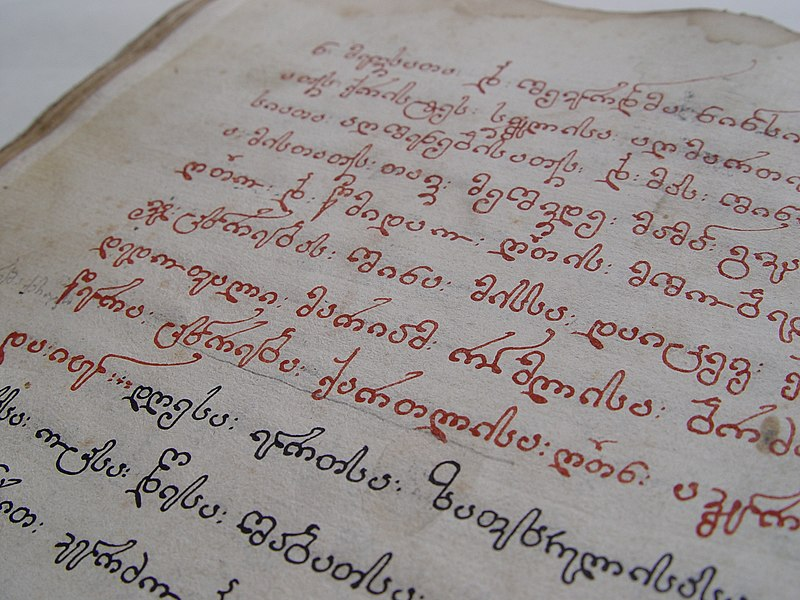
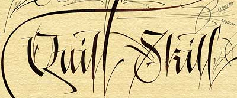
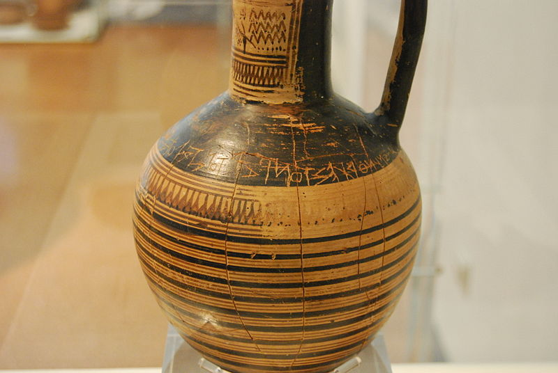
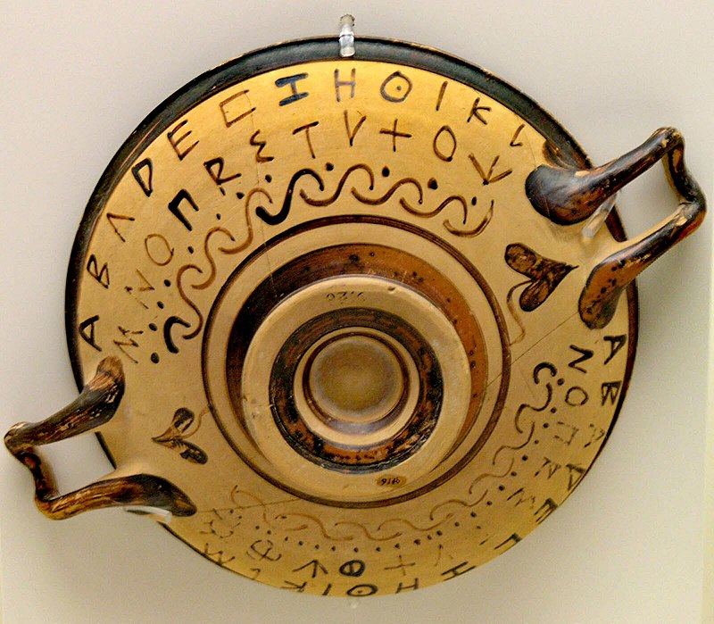
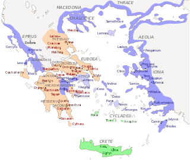
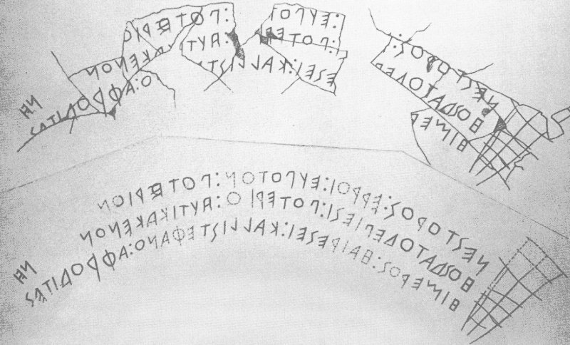
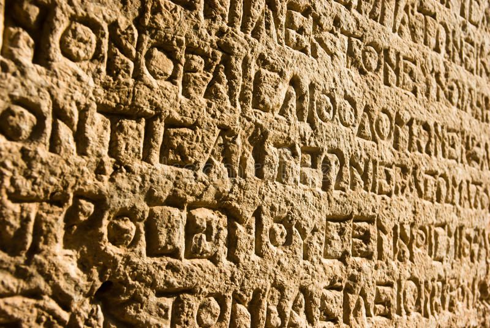

Folio 27r from the Lindisfarne Gospels (c.700) contains the incipit from the Gospel of Matthew. British Library, London.
Western calligraphy is recognizable by the use of the Latin script. The Latin alphabet appeared about 600 BCE, in Rome, and by the first century[clarification needed] developed into Roman imperial capitals carved on stones, Rustic capitals
painted on walls, and Roman cursive for daily use. In the second and third centuries the uncial lettering style developed. As writing withdrew to monasteries, uncial script was found more suitable for copying the Bible and other religious
texts. It was the monasteries which preserved calligraphic traditions during the fourth and fifth centuries, when the Roman Empire fell and Europe entered the Dark Ages. At the height of the Empire, its power reached as far as Great Britain;
when the empire fell, its literary influence remained. The Semi-uncial generated the Irish Semi-uncial, the small Anglo-Saxon. Each region developed its own standards following the main monastery of the region (i.e. Merovingian script,
Laon script, Luxeuil script, Visigothic script, Beneventan script), which are mostly cursive and hardly readable.
Christian churches promoted the development of writing through the prolific copying of the Bible, the Breviary, and
other sacred texts. Two distinct styles of writing known as uncial and half-uncial (from the Latin "uncia", or "inch") developed from a variety of Roman bookhands. The 7th–9th centuries in northern Europe were the heyday of Celtic illuminated
manuscripts, such as the Book of Durrow, Lindisfarne Gospels and the Book of Kells.
Charlemagne's devotion to improved scholarship resulted in the recruiting of "a crowd of scribes", according to Alcuin, the Abbot of York. Alcuin
developed the style known as the Caroline or Carolingian minuscule. The first manuscript in this hand was the Godescalc Evangelistary (finished 783)—a Gospel book written by the scribe Godescalc. Carolingian remains the one progenitor
hand from which modern booktype descends.

Calligraphy in a Latin Bible of 1407 on display in Malmesbury Abbey, England. This Bible was hand-written in Belgium, by Gerard Brils, for reading aloud in a monastery.
In the eleventh century, the Caroline evolved into the Gothic script, which was more compact and made it possible to fit more text on a page. The Gothic calligraphy styles became dominant throughout Europe; and in 1454, when Johannes Gutenberg
developed the first printing press in Mainz, Germany, he adopted the Gothic style, making it the first typeface. The Georgian calligraphy is centuries-old tradition of an artistic writing of the Georgian language with its three scripts.
In the 15th century, the rediscovery of old Carolingian texts encouraged the creation of the humanist minuscule or littera antiqua. The 17th century saw the Batarde script from France, and the 18th century saw the English script spread
across Europe and world through their books.
In the mid-1600s French officials, flooded with documents written in various hands and varied levels of skill, complained that many such documents were beyond their ability to decipher.
The Office of the Financier thereupon restricted all legal documents to three hands, namely the Coulee, the Rhonde, (known as Round hand in English) and a Speed Hand sometimes simply called the Bastarda. While there were many great French
masters at the time, the most influential in proposing these hands was Louis Barbedor, who published Les Ecritures Financière Et Italienne Bastarde Dans Leur Naturel circa 1650.
With the destruction of the Camera Apostolica during
the sack of Rome (1527), the capitol for writing masters moved to Southern France. By 1600, the Italic Cursiva began to be replaced by a technological refinement, the Italic Chancery Circumflessa, which in turn fathered the Rhonde and
later English Roundhand. In England, Ayres and Banson popularized the Round Hand while Snell is noted for his reaction to them, and warnings of restraint and proportionality. Still Edward Crocker began publishing his copybooks 40 years
before the aforementioned.

The Georgian calligraphy is centuries-old tradition of an artistic writing of the Georgian language with its three scripts.
The early printers produced regional versions in type which were used especially to print texts in the vernacular languages, more rarely for Latin texts. The earliest bastarda type was produced by the German Gutenberg in 1454–55. The main
variety was the one used in France,[citation needed] which was also found in Geneva, Antwerp and London.[further explanation needed] Another local variety was found in the Netherlands; Caxton's first types were a rather poor copy of this.[citation
needed] The French lettre bâtarde passed out of use by the mid-16th century, but the German variety developed into the national Fraktur type, which remained in use until the mid-twentieth century.[1] British typeface designer Jonathan
Barnbrook has designed a contemporary interpretation titled Bastard.
Round Hand (also Roundhand) is a type of handwriting and calligraphy originating in England in the 1660s primarily by the writing masters John Ayres and William
Banson. Characterised by an open flowing hand (style) and subtle contrast of thick and thin strokes deriving from metal pointed nibs in which the flexibility of the metal allows the left and right halves of the point to spread apart under
light pressure and then spring back together, Round Hand's popularity grew rapidly, becoming codified as a standard, through the publication of printed writing manuals.

Modern Western calligraphy
During the Renaissance, writing masters of the Apostolic Camera developed the italic cursiva script. When the Apostolic Camera was destroyed during the sack of Rome in 1527, many masters moved to Southern France where they began to refine
the renaissance italic cursiva script into a new script, italic circumflessa. By the end of the 16th century, italic circumflessa began to replace italic cursiva. Italic circumflessa was further adapted into the French style rhonde in
the early 17th century. By the mid-17th century, French officials were flooded with documents written in various hands (styles) at varied levels of skills and artistry. As a result, officials began to complain that many such documents
were beyond their ability to decipher. France's Controller-General of Finances took proposals from French writing masters of the time, the most influential being Louis Barbedor [fr], who had published his Les Escritures financière et italienne-bastarde
dans leur naturel, circa 1650. After examining the proposals, the Controller-General of Finances decided to restrict all legal documents to three hands, namely the Coulée, the Rhonde, and a Speed Hand sometimes simply called Bastarde.
In England, Edward had been publishing copybooks upon French rhonde in the 1640s. In the 1680s, John Ayres popularized their versions of rhonde after further refining and developing it into what had become known as English round hand style.
Greek Styles
Greek alphabet
The Greek alphabet has been used to write the Greek language since the late 9th or early 8th century BCE.[3][4] It is derived from the earlier Phoenician alphabet,[5] and was the earliest known alphabetic script to have distinct letters for
vowels as well as consonants. In Archaic and early Classical times, the Greek alphabet existed in many local variants, but, by the end of the 4th century BCE, the Euclidean alphabet, with 24 letters, ordered from alpha to omega, had become
standard and it is this version that is still used for Greek writing today.
The uppercase and lowercase forms of the 24 letters are:
alpha άλφα, beta βήτα, gamma
γάμμα, delta δέλτα, epsilon έψιλον, zeta ζήτα, eta ήτα, theta θήτα, iota ιώτα, kappa κάππα, la(m)bda λά(μ)βδα, mu μυ, nu νυ, xi ξι, omicron όμικρον, pi πι, rho ρώ, sigma σίγμα, tau ταυ, upsilon ύψιλον,phi φι,chi χι, psi ψι,omega ωμέγα
The Greek alphabet is the ancestor of the Latin and Cyrillic scripts.[6] Like Latin and Cyrillic, Greek originally had only a single form of each letter; it developed the letter case distinction between uppercase and lowercase with Latin during
the modern era. Sound values and conventional transcriptions for some of the letters differ between Ancient and Modern Greek usage because the pronunciation of Greek has changed significantly between the 5th century BCE and today. Modern
and Ancient Greek also use different diacritics. Apart from its use in writing the Greek language, in both its ancient and its modern forms, the Greek alphabet today also serves as a source of technical symbols and labels in many domains
of mathematics, science, and other fields.
Origins

Dipylon inscription, one of the oldest known samples of the use of the Greek alphabet, c. 740 BC
During the Mycenaean period, from around the sixteenth century to the twelfth century BC, Linear B was used to write the earliest attested form of the Greek language, known as Mycenaean Greek. This writing system, unrelated to the Greek alphabet, last
appeared in the thirteenth century BC. In the late ninth century BC or early eighth century BC, the Greek alphabet emerged.[2] The period between the use of the two writing systems, during which no Greek texts are attested, is known as
the Greek Dark Ages. The Greeks adopted the alphabet from the earlier Phoenician alphabet, one of the closely related scripts used for the West Semitic languages, calling it Φοινικήια γράμματα 'Phoenician letters'.[36] However, the Phoenician
alphabet is limited to consonants. When it was adopted for writing Greek, certain consonants were adapted to express vowels. The use of both vowels and consonants makes Greek the first alphabet in the narrow sense,[6] as distinguished
from the abjads used in Semitic languages, which have letters only for consonants.

Early Greek alphabet on pottery in the National Archaeological Museum of Athens
Greek initially took over all of the 22 letters of Phoenician. Five were reassigned to denote vowel sounds: the glide consonants /j/ (yodh) and /w/ (waw) were used for [i] (Ι, iota) and [u] (Υ, upsilon) respectively; the glottal stop consonant /ʔ/ (aleph)
was used for [a] (Α, alpha); the pharyngeal /ʕ/ (ʿayin) was turned into [o] (Ο, omicron); and the letter for /h/ (he) was turned into [e] (Ε, epsilon). A doublet of waw was also borrowed as a consonant for [w] (Ϝ, digamma). In addition,
the Phoenician letter for the emphatic glottal /ħ/ (heth) was borrowed in two different functions by different dialects of Greek: as a letter for /h/ (Η, heta) by those dialects that had such a sound, and as an additional vowel letter
for the long /ɛː/ (Η, eta) by those dialects that lacked the consonant. Eventually, a seventh vowel letter for the long /ɔː/ (Ω, omega) was introduced.
Greek also introduced three new consonant letters for its aspirated
plosive sounds and consonant clusters: Φ (phi) for /pʰ/, Χ (chi) for /kʰ/ and Ψ (psi) for /ps/. In western Greek variants, Χ was instead used for /ks/ and Ψ for /kʰ/. The origin of these letters is a matter of some debate.
Greek Archaic Variants

Distribution of "green", "red" and "blue" alphabet types, after Kirchhoff.
There were initially numerous local (epichoric) variants of the Greek alphabet, which differed in the use and non-use of the additional vowel and consonant symbols and several other features. Epichoric alphabets are commonly divided into four
major types according to their different treatments of additional consonant letters for the aspirated consonants (/pʰ, kʰ/) and consonant clusters (/ks, ps/) of Greek.[38] These four types are often conventionally labelled as "green",
"red", "light blue" and "dark blue" types, based on a colour-coded map in a seminal 19th-century work on the topic, Studien zur Geschichte des griechischen Alphabets by Adolf Kirchhoff (1867).[38]
The "green" (or southern) type
is the most archaic and closest to the Phoenician.[39] The "red" (or western) type is the one that was later transmitted to the West and became the ancestor of the Latin alphabet, and bears some crucial features characteristic of that
later development.[39] The "blue" (or eastern) type is the one from which the later standard Greek alphabet emerged.[39] Athens used a local form of the "light blue" alphabet type until the end of the fifth century BC, which lacked the
letters Ξ and Ψ as well as the vowel symbols Η and Ω.[39][40] In the Old Attic alphabet, ΧΣ stood for /ks/ and ΦΣ for /ps/. Ε was used for all three sounds /e, eː, ɛː/ (correspondinɡ to classical Ε, ΕΙ, Η respectively), and Ο was used
for all of /o, oː, ɔː/ (corresponding to classical Ο, ΟΥ, Ω respectively).[40] The letter Η (heta) was used for the consonant /h/.[40] Some variant local letter forms were also characteristic of Athenian writing, some of which were shared
with the neighboring (but otherwise "red") alphabet of Euboia: a form of Λ that resembled a Latin L (Greek Lambda Athenian.svg) and a form of Σ that resembled a Latin S (Greek Sigma Z-shaped.svg).
Chronology of adoption

Nestor's Cup inscription, Euboean alphabet, 8th century BC.
Most specialists believe that the Phoenician alphabet was adopted for Greek during the early 8th century BC, perhaps in Euboea.[2] The earliest known fragmentary Greek inscriptions date from this time, 770–750 BC, and they match Phoenician
letter forms of c. 800–750 BC.[3] The oldest substantial texts known to date are the Dipylon inscription and the text on the so-called Cup of Nestor, both dated to the late 8th century BC, inscriptions of personal ownership and dedications
to a god.
Tradition recounts that a daughter of a certain Agamemnon, king of Aeolian Cyme, married a Phrygian king called Midas.[4] This link may have facilitated the Greeks "borrowing" their alphabet from the Phrygians because the Phrygian letter shapes
are closest to the inscriptions from Aeolis.[5]

Dipylon inscription
Some scholars argue for earlier dates: Naveh (1973) for the 11th century BC, Stieglitz (1981) for the 14th century, Bernal (1990) for the 18th–13th century, some for the 9th, but none of these are widely accepted.[6] The Fayum alphabet, originating
on Cyprus, seems to be even older than the fragmentary Greek inscriptions mentioned above: it is dated to c. 800 BC and appears to preserve the earliest known form of the Greek alphabet. This could indicate that the Phoenician alphabet
was adapted to Greek on Cyprus, where an important Phoenician colony existed at the time in the city-kingdom of Kition; however, the Cypriot syllabary, which was already employed at the time to write the local dialect, having been in use
since the 11th century, remained in use in Cyprus until the 4th century BC and was not replaced by the adapted Phoenician alphabet this early. Another possibility is that the adaptation happened on Thera, which Herodotus and Pausanias
claim to have been settled early by Phoenicians descending from Cadmus (see below; the legendary Greek ruler Theras, who is alleged by Herodotus and Pausanias to have founded Ancient Thera, was descended from Cadmus as well); however,
a Phoenician presence on the island has not been proven archaeologically.